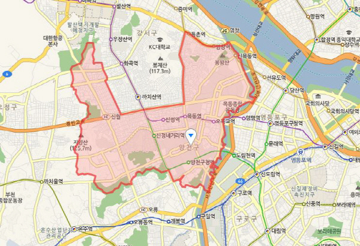
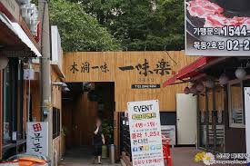
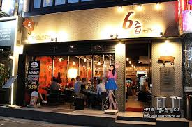
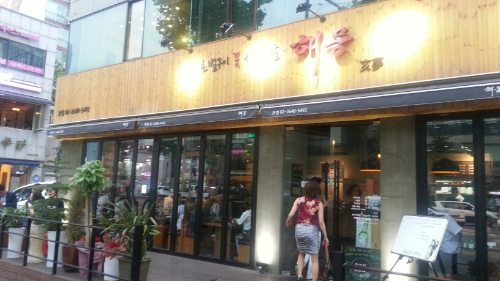

처음으로
성태가 사는 목동을 여행하자.!
목차
- 1.목동 소개
- 2.명소
- 3.맛집
- 4.먹거리 코스
- 5.교통편
1.목동소개

서울 특별시 양천구에 있으며 강아지 머리부터 앞발까지가 목동이다.
서울특별시 양천구에 있는 동. 인구는 15만 9,145명
행정동으로는 목1-5동까지 있으나, 일반적으로 목동이라 하면 목동신시가지아파트와 그 주변 지역(신정동 일부)을 일컫는다.
'버블 세븐' 중 한 지역, 타 지역보다 학구열이 높은 곳으로 유명하다. 사방에서 학원을 목격할 수 있다.
과거 넥센 히어로즈의 홈 구장이었던 목동 야구장이 이곳(목1동)에 있었다.
강남구도 그렇듯, 이 동네가 처음부터 잘 사는 곳이 아니였다. 빈민운동가 제정구 전 의원의 증언에 따르면 이 지역은 1963~65년까지 영등포구 시절 후암, 대방, 이촌 등지에서 온 철거민들이 쓰레기차에 실려져 해당 지역 갈대밭으로 이주된 곳이다. 당시 서울시장이던 동산 윤치영은 이들에게 "이곳만은 손대지 않을 터이니 재주껏 살아보라"고 했다.이들은 갈대를 뽑고 땅을 고르고 루핑쳐서 서민들의 거주지로 변모했고, 1970년대 들어서 아현동 등지 철거민들이 더 이주해왔다.
2.명소
현대백화점 행복한세상백화점
cbs방송국 sbs방송국
파리공원등이 있당.
마을버스02번을타고 20분이면 목동대부분을 돌수있다
3.맛집
맛집이 엄청많다.
마카롱과 초밥 고기정도로 대표적으로 잡을수있다.
목동에 3대 고기집이있다

일미락

6즙

해몽
4.먹거리 코스
조그만 동네에 없는게 없다.
고기가 먹고 싶으면 3대고기집
초밥이 먹고 싶으면 스시노미찌 혹은 은행골
기타는 아오리라멘이라든가 뭐 진짜 다있다.
목리단길 마카롱 카페
5. 교통편
| 지역 |
지하철 |
버스 |
비행기 |
| 양천구 |
2.5.9호선 |
당산,영등포 환승 |
공항30분 |